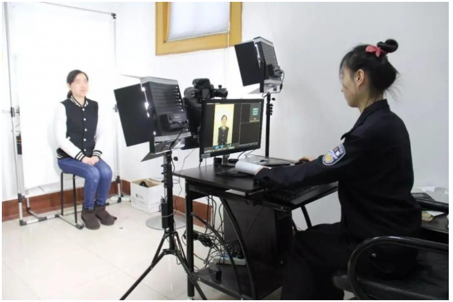
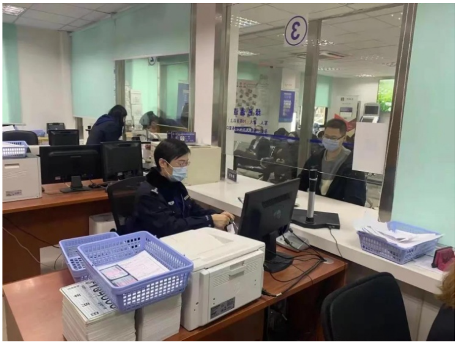
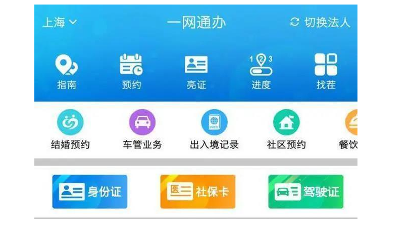
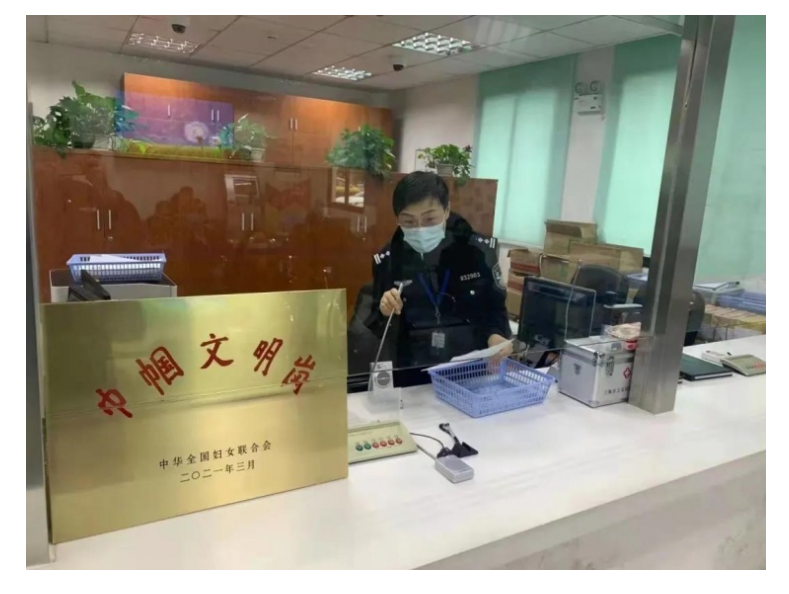

03-09 13:15
以后办理各类证件，可以调用统一的照片库，不用重复拍照了。市公安局说，即日起，上海公安机关在全市范围推出统一照片库实事项目，市民在办理本市公安机关签发的各类需采集持证人头像照片的证件业务时，可自愿选择调用统一照片库中符合要求的照片，也可选择重新采集。

新采集的照片除用于本次业务办理外，还将在统一照片库中自动生成适用于其他证件的照片，以便市民后续办理其他证件业务时使用。
适用于本市公安机关签发的身份证、驾驶证、护照、往来港澳通行证、往来台湾通行证等各类需采集持证人头像照片的证件业务。同时，相关照片也可供全市各政府部门在政务服务过程中调用，市民也可通过“─网通办”总门户和“随申办”移动端（包括app、微信和支付宝小程序)自行下载使用。

市民通过“一网通办”平台办理提供线上预约、预审的证件业务时(如出入境证件业务等)，系统会提示是否选择调用统一照片库中的照片，市民选择调用的，照片将自动推送至业务办理系统审核，审核通过的，市民到窗口办理该业务时就不需要重复采集照片，从而减少业务办理流程。

如果市民事先末在线上调用统一照片库照片、直接到线下窗口办理证件业务的，工作人员将引导市民通过“随申办”移动端扫描二维码或自助设备等途径查看、选择调用照片，审核成功的，无需再采集照片信息。
目前照片库已归集照片2500余万张，已有1800余人次从照片库中查看、选择调用照片。
注:目前统一照片库归集了近几年采集的照片，后续将补充完善更多历史照片信息。如市民办理证件时未查询到相关照片，应为无符合调用要求的照片，市民可咨询现场工作人员，继续按流程办理相关业务。

上海公安机关将在全面推广应用统一照片库的基础上，持续优化完善相关系统和流程，探索更多便民举措，不断提升市民群众的满意度和获得感。
责任编辑倪莉琪
来源上海发布
上观号作者:浦东观察